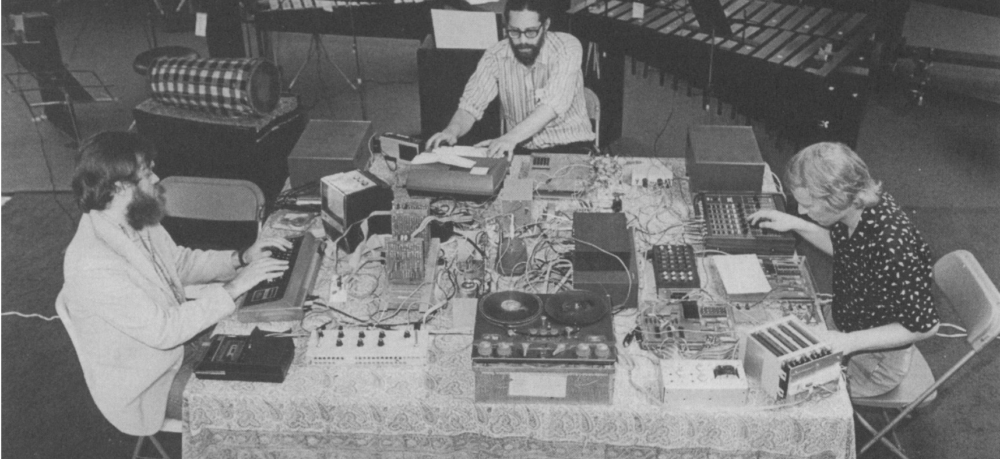
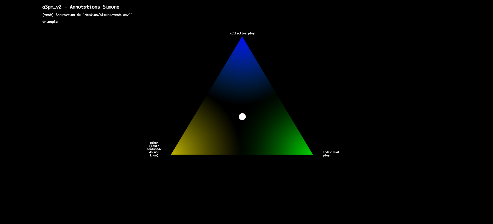
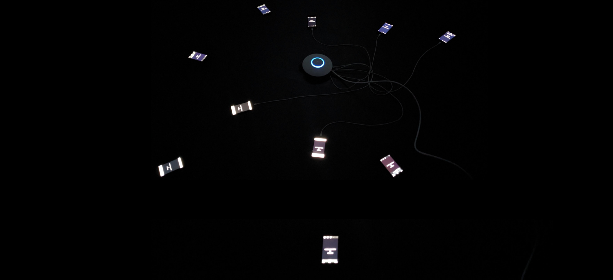
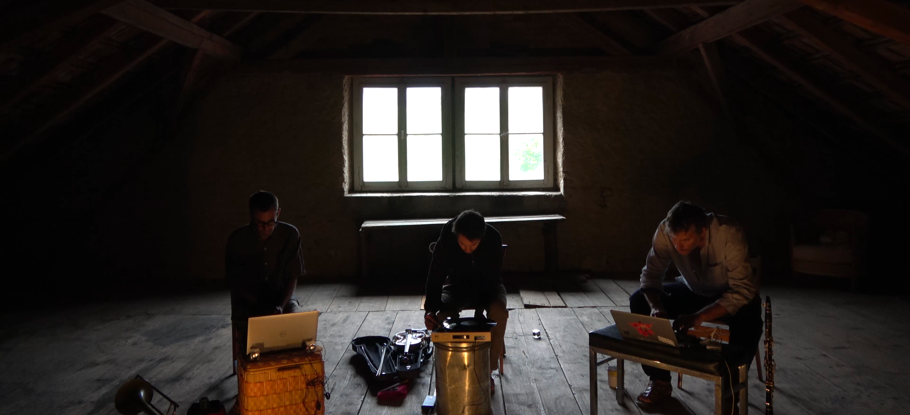
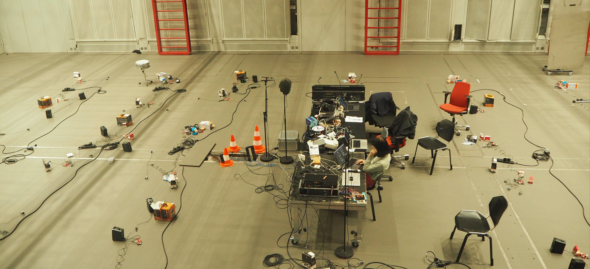

aliénor golvet
research
music
about
PhD thesis companion website
On this companion website to my PhD thesis you will find multimedia content such as video and audio that provides a better insight on elements discussed in this manuscript

Chapter 1 - Background

Chapter 3 - A3PM

Chapter 4 - Koryphaîos
Chapter 5 - Simone Collective

Chapter 6 - Simone Solo

Chapter 7 - Quasimodots